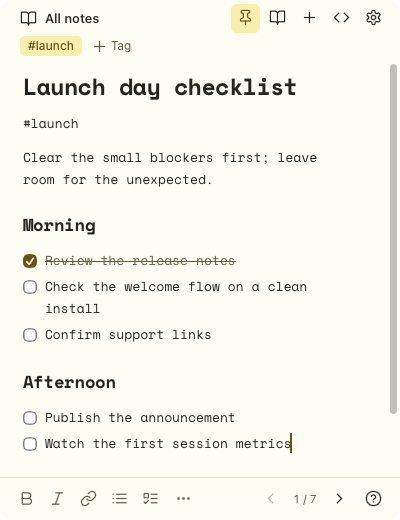

All notes
#launch
Call with Priya
budget: 18k
approve by Fri
- Send the deck
- Ask about annual
Banana Notes is a little notepad that floats over whatever you're doing. Open it with a hotkey. Click back to your work and it fades out of the way.A little notepad that floats over whatever you're doing on your Mac. One shortcut opens it. Click away and it fades.
Free and open source · macOS 14 or later · No accountFree and open source · macOS 14+
import { quote } from './pricing'
export function total(seats: number) {
const base = quote(seats)
// TODO: annual discount?
return base * 0.85
}
export const LAUNCH_DATE = '2026-11-04'
export const BUDGET = 18_000
You're on a call and someone says a number worth keeping. By the time you've opened a notes app and named a file, it's gone.
Untitled 429.txt
And the ones you did save look like this.
Pin a note over your editor, a doc or a video call. Click back to your work and it fades so you can see what's under it. Click the note and it's solid again.
Window opacity is fully customizable in the app.
import { quote } from './pricing'
export function total(seats: number) {
const base = quote(seats)
// TODO: annual discount?
return base * 0.85
}
export const BUDGET = 18_000budget: 18k
approve by Fri
#launch
Clear the small blockers first; leave room for the unexpected.
#launch
Ship the docs after Priya signs off.
Waiting on the final build.
#launch
budget: 18k
approve by Fri
#launch
Annual plan: 15% off.
Keep the monthly price simple.
Some stories take the long way around. Trees make time visible.
Pay attention to the roots, not just the canopy.
const retry = async (run: () => Promise<void>) => {
for (let attempt = 0; attempt < 3; attempt++) {
try { return await run() }
catch (error) { if (attempt === 2) throw error }
}
}No pile of windows to manage. Every note lives in this one small window, and you flip through them like pages in a notebook.
Filter to one tag and only those notes are left. New notes join it, and flipping stays inside it.
Search by what you meant, not just the words you typed. It runs on your Mac, so your notes never leave it.
Markdown renders as you type. [ ] makes a checkbox and ** makes it bold. There's no preview pane.
Nothing to sign up for. Open it and write.
Unless you pin it. No Dock icon, no ⌘Tab clutter, and ⌃⇧Space brings it right back.
Notes live in one file on your Mac.
Banana Light · Nord · Catppuccin Latte · Rosé Pine Dawn
Banana Notes is open source under the MIT license. Read the code, build it yourself, keep it forever.
Nothing to sign up for. Open it and write.
Notes live in one file on your Mac.
No analytics, no telemetry, nothing phoned home.
Meaning-based search runs on your Mac.
Export every note as .md any time.
Universal: Apple silicon and Intel.
Download it and open it once. It lives in your menu bar, not the Dock.
Press it from any app. Turn on Open at login and it's always ready.
It saves as you type, then fades until you need it again.